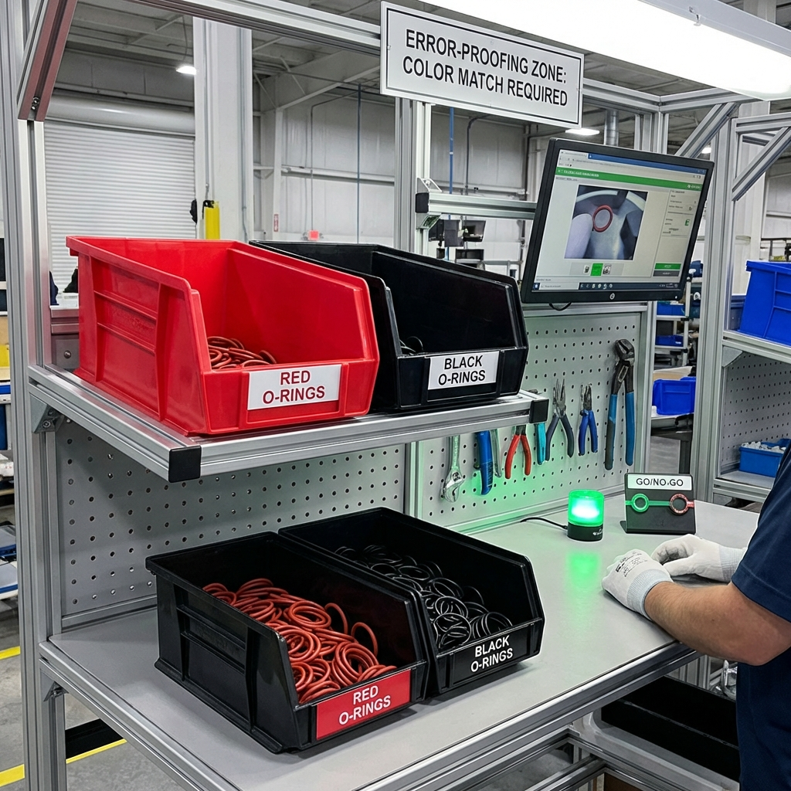

Pôle Formation UIMM-CVDL
POKA - YOKE
(Anti-Erreur)
Rendre l'erreur IMPOSSIBLE.
Erreur vs Défaut
👤 Erreur : Action humaine (oubli, confusion...). C'est inévitable.
💥 Défaut : Le résultat de l'erreur sur le produit.
But du Poka-Yoke : Empêcher que l'Erreur ne devienne un Défaut.
Le Problème : Joints Inversés
15% d'erreurs - Les joints se ressemblent trop !
La Solution Poka-Yoke

Bacs colorés avec couvercles sélectifs → Erreur impossible !
Types de Poka-Yoke
- 🛑 De Contact : Forme physique, guide, détrompeur.
- 🔢 De Nombre : Compter les pièces, livrer le nombre exact.
- ⏱️ De Séquence : Obligation de suivre l'ordre (A avant B).